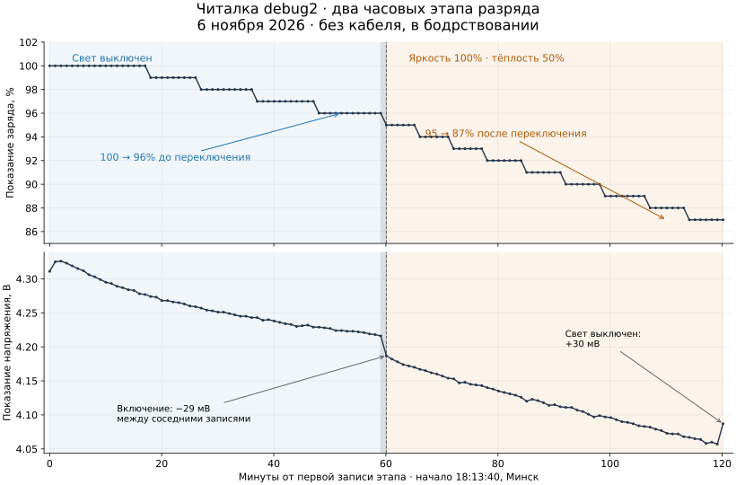

Минутные записи: без света около 4–5 процентных пунктов за час, со светом 100% и тёплостью 50% — около 8–9. Между этапами показание меняется с 96% до 95%; точная граница не записана. Доля потребления самой диагностики этим прогоном не выделена.